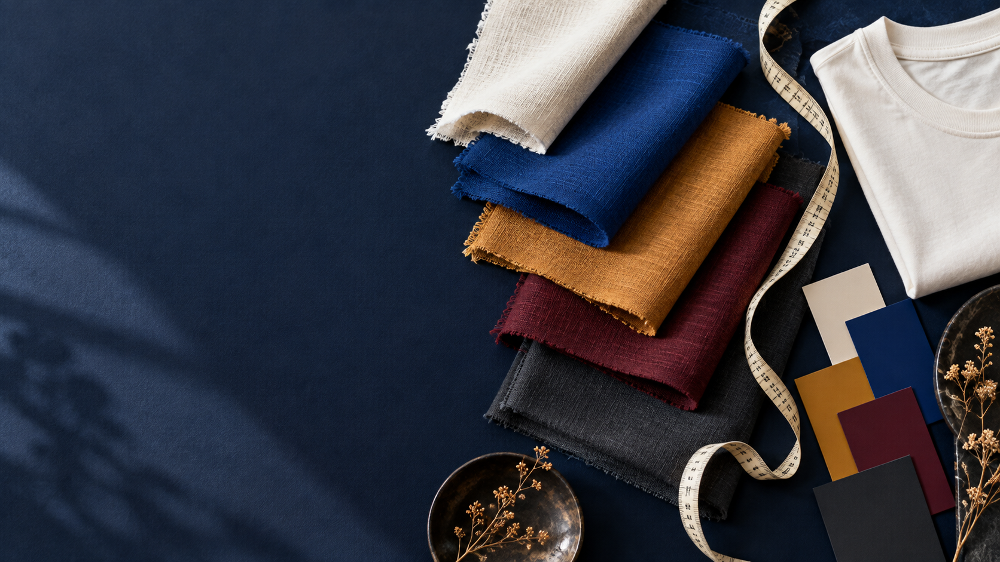

服饰百科 · 网购参谋 · 个人衣橱
这件衣服，适不适合你？
从一个材质词、一张标签或一件合身衣服开始。衣研把零散信息整理成你能看懂、能比较、下次还能用的参考。

先记住这一条
名字像，不代表成分一样
“100%棉”“棉100%”“纯棉”“全棉”在规范标注中表达的是同一种成分关系，不能根据文字顺序判断真假。看到“云朵棉”“冰丝”等名称时，仍要回到水洗标查看规范纤维名称与比例。
你的穿着线索
从真实体验长出来
Material index
材质百科
先看懂纤维，再结合织法、厚薄和使用场景判断一件具体衣服。
10个基础词条
Label reader
标签解读
把商品描述或水洗标文字贴进来，先整理已知信息，再列出仍需确认的部分。
01
输入标签文字
当前版本不读取图片，请手动输入或粘贴。原文只在当前页面处理。
填入示例
02
解读结果
等待一张标签
我们会区分成分、比例、商品用语和缺失信息，不会仅凭文字判断实物真假。
Fit desk
尺寸参谋
优先和一件穿着效果已知的同类衣物比较。相同尺码字母，不代表相同大小。
A · 已知参照
穿过的那件
B · 待购商品
正在考虑的这件
平铺宽度与整圈围度、裤内长与裤外长不会混合计算。
Saved comparisons
最近的比较
Colour & style
配色与风格探索
肤色信息只是一条线索。你喜欢、愿意穿并在真实场景中感觉自在，才是更长期的依据。
0组已收藏配色
配色结果用于帮助尝试，不对肤色或审美作等级判断。屏幕显示、光线和面料光泽都会影响实际颜色。
Wear log
我的衣橱
不只记“买过什么”，更要记下穿在哪里、哪里舒服，以及为什么愿意再次选择。
Personal notes
个人档案
只填写愿意记录的部分。身体测量、成衣尺寸与主观偏好会分别保存。
本地数据管理
清除后无法从当前浏览器恢复，请先导出备份。